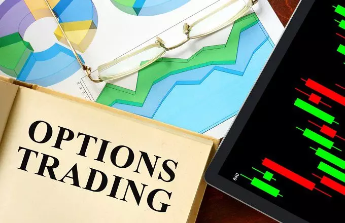

Greatest Options Books for Investing in 2022

Options trading may initially seem
complicated, but if you understand a few fundamental concepts, it
becomes clear.
Investor portfolios are frequently built using a variety of asset
classes. Stocks, bonds, ETFs, and even mutual funds could be among
them. Another asset type is options, and when used properly, they can
provide many benefits beyond what trading stocks and ETFs alone can.
Contracts known as options
allow the holder the choice to buy or sell a specified amount of an
underlying asset at a predetermined price at or before the contract
expiration date.
Options can be purchased with brokerage investing accounts, just like the majority of other asset classes.
You will find here the best books about Options.
This fourth edition includes an in-depth analysis of volatility and
volatility trading, updated information on all stock option strategies
reflecting recent market conditions, buy and sell strategies for
Long Term Equity Anticipation Securities (LEAPs), detailed guidance for investing in the expanding field of
structured products, and the most recent advancements in futures and
futures options. This edition also includes updated information on all
stock option strategies.
Packed with graphs and charts to clarify profit and loss potential,
margin requirements, and criteria for selection of a position, this
classic remains an indispensable resource for investors determined to
master the world of options--and profit.